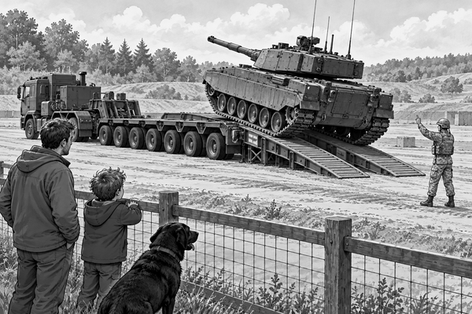

Tom and Dad stood on the safe side of the fence.
Scout sat between them.
A huge tank waited on the training ground.
Its day of practice was over.
Now it had to reach a workshop many miles away.
“Will it drive there?” asked Tom.
Dad shook his head.
“Look. Its taxi is coming.”
A giant truck rumbled around the bend.
Behind it was a long, low trailer.
Scout’s ears went up.
The trailer had row after row of wheels.
Tom tried to count them.
He lost count when the truck turned.
Machine fact: Heavy tanks often ride on transporters for long road trips. This saves wear on their tracks and helps protect the road.
The driver, Mia, stopped on flat ground.
She lowered two wide steel ramps.
A guide stood well to one side.
He held up both hands.
The tank crept forward.
Clank. Clank. Clank.
Its metal tracks touched the ramps.
The guide waved it on very slowly.
Up went the tank.
The trailer dipped, then sat firm.
At last, the guide closed both fists.
Stop!
The tank was in the right place.
Mia and her team fixed thick chains to it.
They checked every chain twice.
Trailer fact: Many axles help spread a heavy load. Each row of wheels carries part of the weight.
Then came the hardest turn.
The transporter had to pass through a narrow gate.
Mia steered wide.
The front of the truck cleared the post.
The middle cleared too.
But the long trailer still swung towards it.
Tom held his breath.
Mia crawled forward.
The guide watched the last wheel.
One hand’s width.
Then two.
The final wheel rolled through.
“Made it!” cheered Tom.
Scout gave one happy bark.
The giant tank taxi rolled towards the workshop.
It was not fast.
It did not need to be.
It was strong, steady and safe.
1. Why did the tank ride on the transporter?
2. Why did the trailer have so many wheels?
3. What held the tank safely in place?